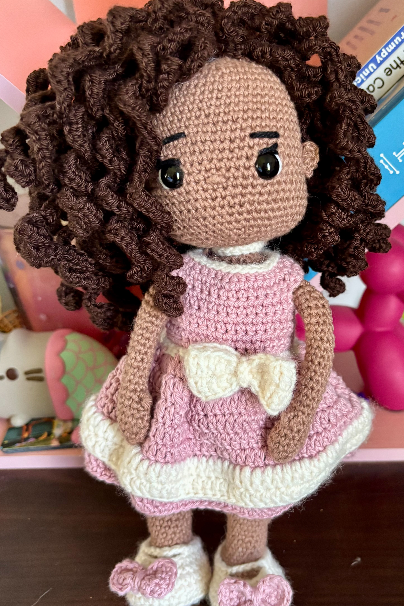
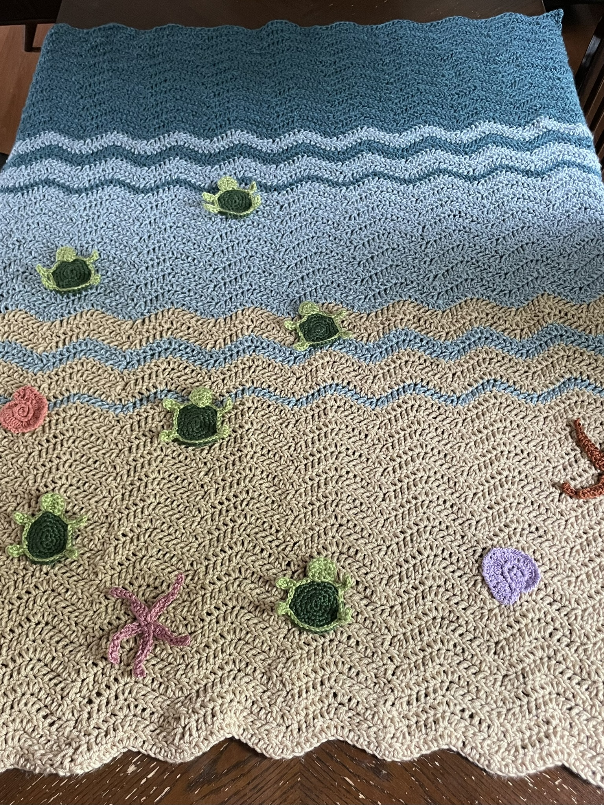
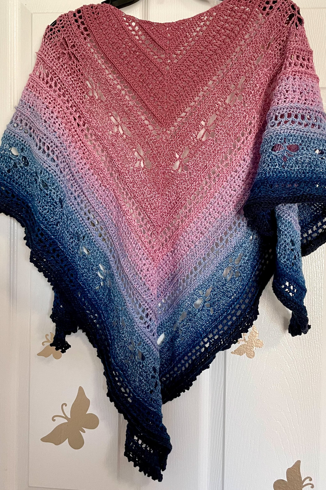
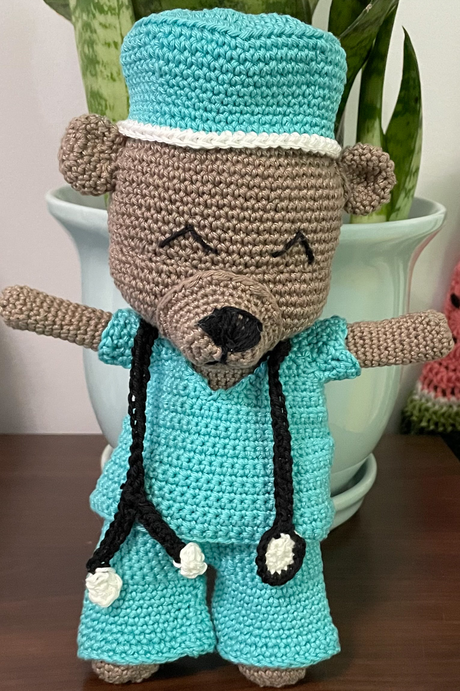
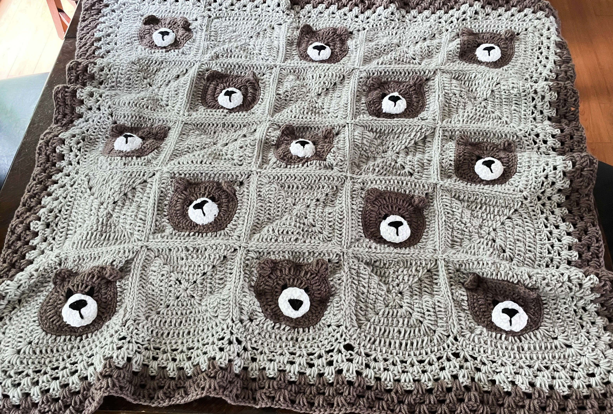
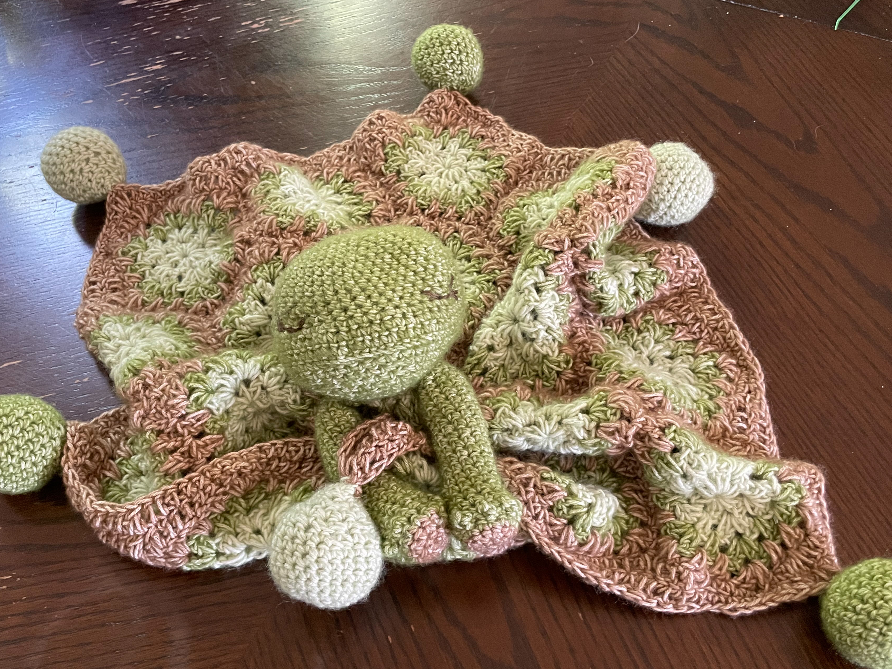

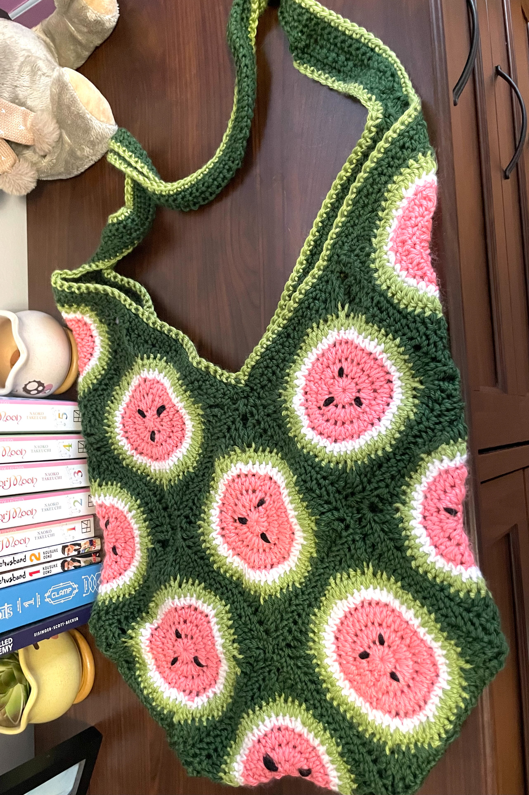
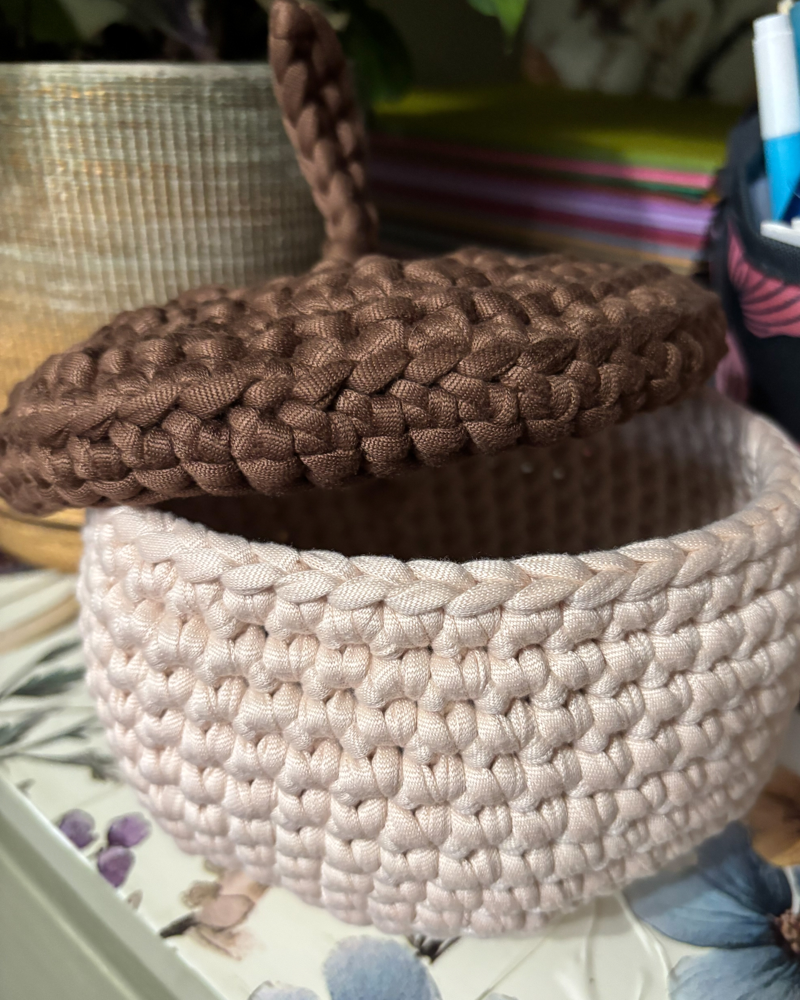
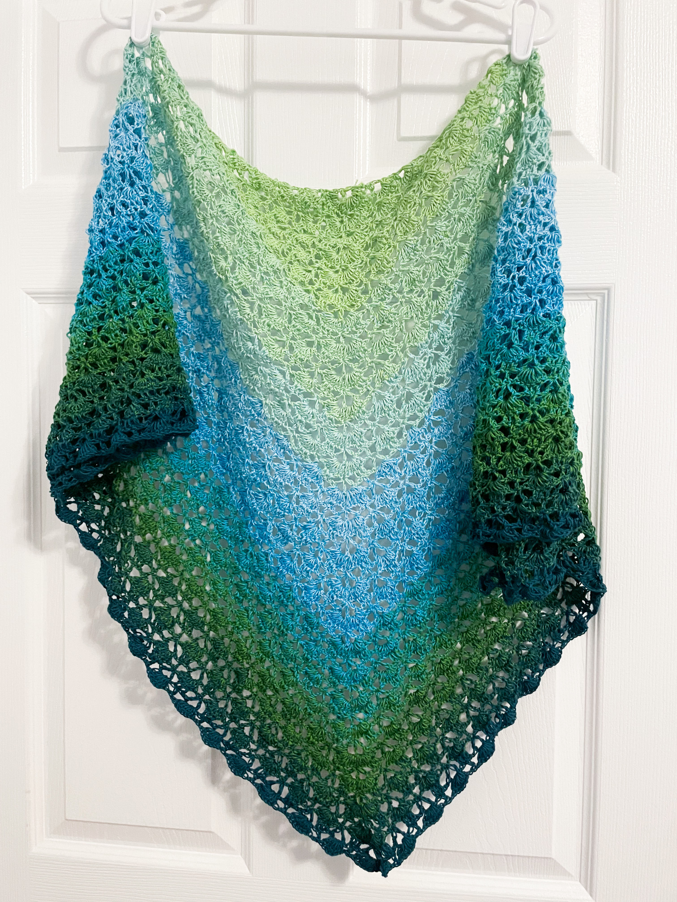
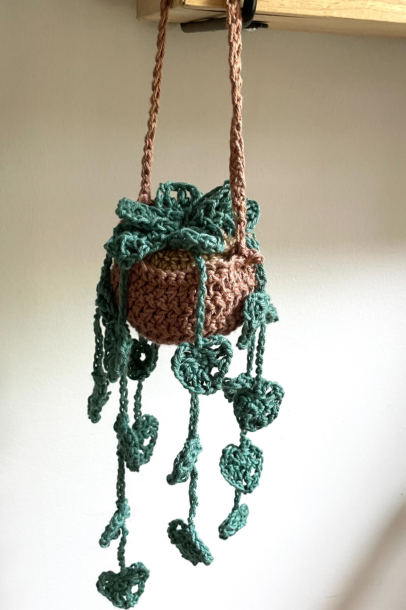
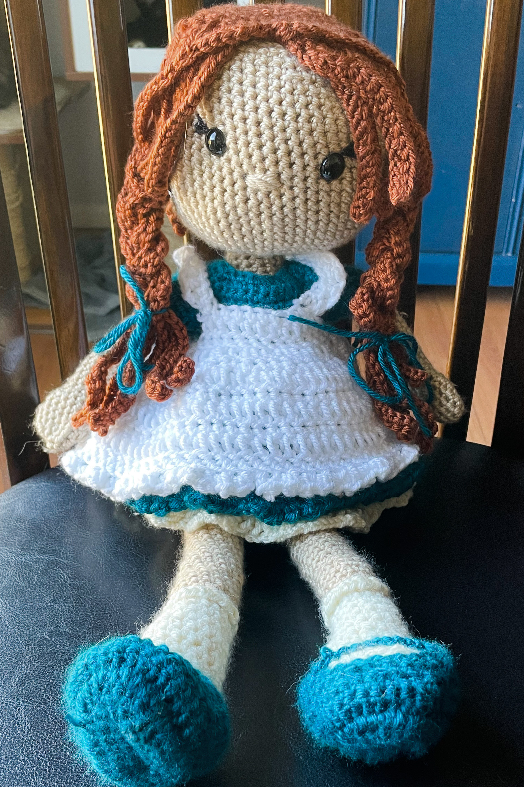

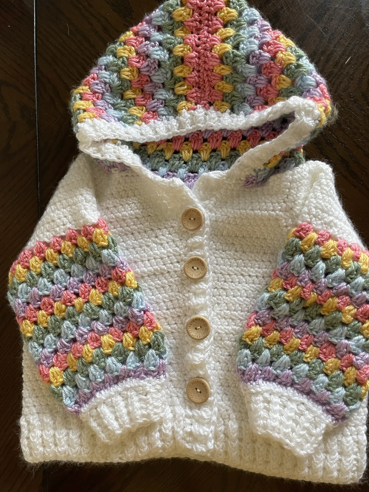
I remember being quite young, probably around eight-years-old when my mother tried to teach me to crochet. But between her impatience and my own, it did not stick. It wasn't until many, many years later, in 2021, that I would
discover my love for the craft.
Crocheting has become more than a hobby in the past few years. It can almost be meditative if I am working on a project that doesn't require me to count stitches. Additionally, I often use
these repetitive stitch patterns to help keep me focused on other things as I find it to be very grounding. If I am watching a movie or show, I am nearly always crocheting while I do it. It may seem counterproductive, but it blocks out any loud background
noise I would experience while trying to focus on what is in front of me. Additionally, many common stitches are now muscle memory for me so I don't have to constantly look down at what I am working on in some cases.
The complexity of crochet projects that a person can wear has the widest spectrum of any other types of projects I have completed. Scarves are one of the easiest wearables to crochet but sweaters and shawls can vary in complexity. Simple scarves are generally what I crochet when I need to use it as a grounding or focusing tool. Lace shawls are one of my favorite projects to work on. They are often delicate and require most of my attention while also taking the most time to complete, but they are often worth it.
Amigurumi is the Japanese art of knitting or crocheting small, stuffed yarn creatures. My very first project when I starting crocheting back in 2021 was a small amigurumi turtle. Compared to projects such as scarves, hats, and blankets, amigurumi was a challenging project to start with. Needless to say, it didn't turn out exactly as the pattern I used to create it. But I was determined to improve so I could create many cute items.
Blankets are one of the most common crochet projects that hobbyist complete that can vary in difficulty. I made a blanket that took me about a year to make (at least a third of that time was spent weaving in hundreds
of yarn ends) and others that I completed within a month. Baby blankets are generally the most common reason I end up crocheting blankets as they typically have the longest time investment.
There are many other projects that I have enjoyed creating as it is a very versatile craft. Those projects have included:











